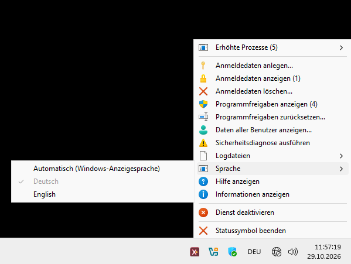

Aufrufe ohne Kontoname und Kennwort
Nach der Einrichtung genügt für typische Starts der eigentliche Programm-, Befehls- oder Skriptaufruf. Kontoname und Kennwort müssen nicht in Skripten oder Verknüpfungen stehen.
eXecute Under User Context
xucRun führt Programme, Befehle und Skripte unter einem ausgewählten Windows-Konto aus – bei Bedarf mit erhöhten Rechten. Der Anwender bleibt dabei in seiner aktuellen Windows-Sitzung; Kontoname und Kennwort müssen nach der Einrichtung nicht bei jedem passenden Aufruf erneut angegeben werden.
xucRun ist Open-Source-Software in Entwicklung. Der aktuelle Stand kann Fehler enthalten, vom beschriebenen Verhalten abweichen und sich ändern. Vorgesehen für erfahrene Privatanwender und Entwickler auf selbst verwalteten Windows-Rechnern, nicht für Systeme mit erhöhtem Schutzbedarf. Die Nutzung erfolgt eigenverantwortlich. Hinweise zu Einsatzbereich, Schutzgrenzen und Haftung.
PS C:\Tools> xucRun.exe regedit.exe
C:\Tools>xucRun.exe regedit.exe
Windows-FunktionenKontowechsel und UAC
Getrennte SpeicherungKeine Kennwortübergabe an Zielprogramme im vorgesehenen Ablauf
Interaktive FreigabenEinmalig oder wiederverwendbar im Dialog gewählt
Zweck und Funktionsweise
Ein zentraler Anwendungsfall sind ausgewählte administrative Aktionen aus einem Standardbenutzerkonto, ohne in eine separate Administratorsitzung zu wechseln. Nur die angeforderte Ausführung läuft unter dem gewählten Zielkonto; Konto und Berechtigungen des angemeldeten Benutzers bleiben unverändert. Das Zielkonto kann ein Standardkonto sein oder der lokalen Administratorengruppe angehören und dann bei Bedarf erhöht verwendet werden.
Nach der Einrichtung genügt für typische Starts der eigentliche Programm-, Befehls- oder Skriptaufruf. Kontoname und Kennwort müssen nicht in Skripten oder Verknüpfungen stehen.
xucRun verarbeitet Programmpfade, Arbeitsverzeichnisse, Batchdateien und typische Shell-Sonderzeichen und reicht sie an das Zielprogramm weiter. Aufrufe können aus Konsolen, Skripten, Verknüpfungen und konfigurierbaren Dateimanagern erfolgen.
Dialoge dienen zum Einrichten und Auswählen von Konten sowie zum Freigeben angeforderter Ausführungen.
xucRun verwendet vorhandene Windows-Funktionen für Kontowechsel und UAC-Erhöhung in einem gemeinsamen Ablauf für angeforderte Ausführungen.
Schutzmechanismen
xucRun verwendet Windows-APIs zur Kennwortspeicherung. Im vorgesehenen Ablauf gelangen Kennwörter weder in die Kommandozeile noch an das Zielprogramm. Kennworteingabe und Freigaben erfolgen auf einem separaten Windows-Desktop. Ein benutzerspezifisches Sicherheitsmerkmal unterstützt dort die Wiedererkennung späterer xucRun-Dialoge.
Schutzgrenze: Auf einem kompromittierten System kann xucRun keinen umfassenden Schutz gewährleisten. Zudem müssen aufrufende Skripte und Konfigurationsdateien vertrauenswürdig sowie vor unbefugten Änderungen geschützt sein.
Falls Windows für eine konkrete Erhöhung eine UAC-Bestätigung verlangt, bleibt sie Teil des Startvorgangs. xucRun ersetzt sie nicht durch eine eigene Freigabe.
Freigaben können gezielt an den final aufgelösten Pfad und SHA-256-Hash eines bestimmten Zielprogramms gebunden oder bewusst allgemein gehalten werden. Ändert sich eine gebundene Programmdatei, passt die bisherige Freigabe nicht mehr. Allgemeine Freigaben ermöglichen dagegen Starts ohne Bindung an ein bestimmtes Zielprogramm.
xucRun verwendet gespeicherte Anmeldedaten nur für einen Start, der von einer aktiven Freigabe abgedeckt ist oder vom Benutzer im laufenden Dialog freigegeben wird. Ohne Freigabe erfolgt kein Start.
Längere und weiter gefasste Freigaben vermeiden häufiger erneute xucRun-Freigabeentscheidungen. Kürzere oder genauer an Programm, Aufruf und Zielkonto gebundene Freigaben begrenzen ihre Wiederverwendung. Bei einer wiederverwendbaren Freigabe ist diese differenzierte Auswahl in der Regel nur einmal erforderlich.
Wiederverwendbare Freigaben lassen sich zusätzlich an Argumente, Arbeitsverzeichnis und Startsichtbarkeit binden. Direkt erkannte Skripte können in diese Bindung einbezogen werden; später geladene Inhalte nicht.
Installation und Einrichtung
Der Core-Installer erstellt auf deinem Rechner automatisch ein lokales xucRun-Zertifikat und signiert die zu installierenden Komponenten damit. Vor der Installation und bei der späteren Verwendung prüft xucRun die Signaturen der zusammengehörigen Komponenten. Dadurch werden nachträgliche Änderungen erkennbar, während das dauerhafte Vertrauen auf deinen Rechner begrenzt bleibt; das Entwicklerzertifikat wird dort nicht als Vertrauensanker installiert. Einzelheiten beschreibt die lokale Signierung.
Der Installer richtet alle benötigten xucRun-Komponenten ein und kann xucRun zusätzlich in den Windows-Suchpfad aufnehmen. Danach lässt sich xucRun.exe in neuen Konsolen ohne vollständige Pfadangabe aufrufen.
Benötigte Anmeldedaten werden bei Bedarf auf einem separaten Windows-Desktop abgefragt und können auch vorab eingerichtet werden.
Ist keine passende Freigabe aktiv, wird der Start interaktiv bestätigt.
xucRun.exe regedit.exeAnwendungsbeispiele
Die Beispiele setzen voraus, dass xucRun installiert ist, die benötigten Konten eingerichtet sind und xucRun bei der Installation in den Windows-Suchpfad aufgenommen wurde. Ohne diesen Eintrag ist der vollständige Pfad "%ProgramFiles%\xucRun\xucRun.exe" zu verwenden. Fehlt eine passende Freigabe, fragt xucRun vor dem Start interaktiv nach.
Ist genau ein Administratorkonto gespeichert, genügt der Zielbefehl. Eine für diesen erhöhten Start von Windows verlangte UAC-Bestätigung bleibt erforderlich.
xucRun.exe regedit.exe
Mit /user: wird das angegebene Konto verwendet, ohne dass xucRun selbst eine zusätzliche Rechteerhöhung anfordert.
xucRun.exe /user:DOMAIN\Benutzer notepad.exe
Pfade, Argumente und typische Shell-Sonderzeichen werden kontrolliert an die Batchdatei weitergereicht.
xucRun.exe "C:\Scripts\Wartung & Prüfung.bat"
Ohne Zielprogramm erkennt xucRun die aufrufende Konsole, startet denselben Konsolentyp im ermittelten Konten- und Berechtigungskontext und übernimmt das aktuelle Arbeitsverzeichnis. Unterstützt werden Eingabeaufforderung, Windows PowerShell, PowerShell und TCC.
xucRun.exe
xucRun.exe /user:<Konto>
xucRun lässt sich aus konfigurierbaren Dateimanagern, Skripten, Desktop-Verknüpfungen und anderen Anwendungen aufrufen, um Programme, Befehle und Skripte unter einem ausgewählten Konto und bei Bedarf erhöht zu starten. Die Dokumentation enthält unter anderem ein vollständiges Konfigurationsbeispiel für Total Commander.
Optionale Bedienoberfläche
xucRun Tray zeigt ein Statussymbol im Benachrichtigungsbereich der Windows-Taskleiste neben der Uhr. Über dessen Menü lassen sich Betriebszustand, erhöhte Prozesse, Anmeldedaten, Freigaben, Sicherheitsdiagnose und Protokolle aufrufen, ohne die zugehörigen Verwaltungsbefehle manuell einzugeben.
Das Tray ist für die Einrichtung, Statuskontrolle und spätere Konfigurationsänderungen hilfreich und kann dauerhaft oder nur bei Bedarf verwendet werden. xucRun und sein Brokerdienst bleiben ohne installiertes oder laufendes Tray vollständig nutzbar.

Verwaltungsbefehle, Datensicherungen, Updateverhalten und weitere technische Einzelheiten beschreibt die README.
Quellcode und Dokumentation sind öffentlich zugänglich, damit technische Maßnahmen, ihre Grenzen und verbleibende Risiken nachvollzogen werden können. Die Veröffentlichung ist jedoch weder eine Sicherheitsgarantie noch ein Beleg für ein unabhängiges Audit; xucRun wurde nicht unabhängig auditiert oder zertifiziert. Prüfe vor der Nutzung Quellcode, SHA-256-Prüfsummen, vorgesehenen Einsatzbereich und dokumentierte Sicherheitsgrenzen und verwende xucRun nur, wenn das verbleibende Risiko für deinen Einsatzfall akzeptabel ist.
xucRun verwendet Windows-APIs, um Kennwörter, Freigaben, Sicherheitsmerkmale, zugehörige Metadaten und angelegte Datensicherungen auf dem lokalen Computer zu speichern. Datensicherungen können außerdem eine vom Benutzer eingegebene Beschreibung enthalten. Im vorgesehenen Ablauf werden gespeicherte Kennwörter und Sicherheitsmerkmale nicht an normal gestartete Programme übertragen. Bei der Deinstallation lassen sich diese Produktdaten vollständig entfernen.
Der Windows-Dienst verwaltet gespeicherte Kennwörter getrennt vom normal gestarteten xucRun-Programm. Er prüft jeden angeforderten Start und startet das Programm unter dem gewählten Konto. Notwendige Freigaben und UAC-Abfragen bleiben für den Benutzer sichtbar und müssen weiterhin bestätigt werden. Der Dienst schafft keine zusätzlichen Berechtigungen.
xucRun unterstützt Windows 10 und Windows 11 auf x64-Systemen. Andere Windows-Versionen und ARM64-Systeme wurden nicht geprüft und werden nicht unterstützt. Zusätzlich ist die aktuelle Microsoft Visual C++ v14 Redistributable für x64 erforderlich; einen zusätzlichen Fremddienst benötigt xucRun nicht. Fehlt die Laufzeitkomponente, bietet der Installer Download, Auswahl einer vorhandenen vc_redist.x64.exe oder Abbruch an.
Der Installer richtet die benötigten Programmkomponenten und den Windows-Dienst ein. Benötigte Zielkonten und Anmeldedaten können vorab eingerichtet oder beim ersten entsprechenden Start interaktiv ausgewählt und erfasst werden. Auch die erforderliche xucRun-Freigabe wird bei Bedarf im Dialog festgelegt.
Für die typische Nutzung müssen keine Konfigurationsdateien manuell bearbeitet werden. Das optionale xucRun Tray bietet einen grafischen Zugang zu Anmeldedaten, Freigaben, Statusinformationen, Sicherheitsdiagnose und Protokollen. Dieselben Verwaltungsaufgaben lassen sich auch über die dokumentierten Befehle ausführen; xucRun bleibt ohne Tray vollständig nutzbar.
xucRun unterstützt beide Ausgangssituationen. Bei einem angemeldeten Standardbenutzer können ausgewählte Programme unter einem anderen eingerichteten Standard- oder Administratorkonto gestartet werden. Ein Administratorkonto kann dabei bei Bedarf erhöht verwendet werden. Das angemeldete Konto bleibt Standardbenutzer.
Ein Standardkonto kann nicht unter seiner eigenen Identität mit Administratorrechten gestartet werden. Für administrative Aktionen verwendet xucRun deshalb ein getrenntes Konto aus der lokalen Administratorengruppe; das angemeldete Standardkonto erhält dadurch keine zusätzlichen Rechte. Wer bereits mit einem Administratorkonto arbeitet und lediglich dasselbe Konto erhöhen möchte, kann dafür auch die Windows-eigenen UAC-Funktionen verwenden.
Ist der angemeldete Benutzer selbst Mitglied der lokalen Administratorengruppe, kann xucRun dessen Konto für administrative Starts verwenden; eine von Windows verlangte UAC-Bestätigung bleibt erforderlich. Alternativ lassen sich Programme auch unter einem anderen eingerichteten Konto starten.
xucRun ändert weder Kontotypen noch Gruppenmitgliedschaften. Es verwendet die vorhandene Windows-Konfiguration für den jeweils angeforderten Start.
xucRun ersetzt diese Windows-Funktionen nicht, sondern verbindet sie in einem wiederverwendbaren Ablauf. Nach der Einrichtung können Anmeldedaten für Zielkonten getrennt verwaltet und angeforderte Ausführungen gezielt freigegeben werden. Typische Starts benötigen dann weder Kontonamen noch Kennwörter in Skripten, Verknüpfungen oder Kommandozeilen und erfolgen weiterhin in der bestehenden Windows-Sitzung. Eine von Windows verlangte UAC-Bestätigung bleibt erforderlich.
Nein. xucRun bündelt vorhandene Windows-Funktionen, schafft keine zusätzlichen Berechtigungen und ersetzt UAC nicht durch eine eigene Freigabe. Bei kontenübergreifenden erhöhten Starts muss Windows für das gewählte Administratorkonto einen bestätigbaren UAC-Weg bereitstellen; andernfalls bleibt der Start geschlossen. Das kann insbesondere das integrierte Konto Administrator ohne aktivierten Administratorbestätigungsmodus betreffen.
Das veröffentlichte Paket ist mit einem selbstsignierten Entwicklerzertifikat signiert. Ohne lokale Neusignierung müsste dieses Zertifikat auf jedem Zielrechner dauerhaft als vertrauenswürdige Stammzertifizierungsstelle und als vertrauenswürdiger Herausgeber installiert werden. Windows würde dann jeder Datei vertrauen, die mit demselben Entwicklerzertifikat signiert wurde.
Der Core-Installer prüft die digitalen Signaturen, erstellt oder verwendet ein lokales Zertifikat mit nicht exportierbarem privaten Schlüssel und signiert die Komponenten damit neu. Das dauerhafte Vertrauen bleibt so auf den jeweiligen Rechner begrenzt. Die lokale Signierung bestätigt nicht die Herkunft des Downloads; deshalb muss zuvor die veröffentlichte SHA-256-Prüfsumme verglichen werden. Lokale Signierung im Detail
xucRun für Windows
xucRun und das optionale Tray werden als getrennte Open-Source-Projekte auf GitHub veröffentlicht.
Installationsdateien, Prüfsummen und Versionshinweise stehen auf der Downloadseite. Quellcode, Lizenztexte und technische Dokumentation befinden sich in den jeweiligen GitHub-Repositories.
Wichtiger Hinweis: Bitte lies vor Download und Nutzung die Hinweise zu Einsatzbereich, Sicherheitsgrenzen und möglichen Risiken.